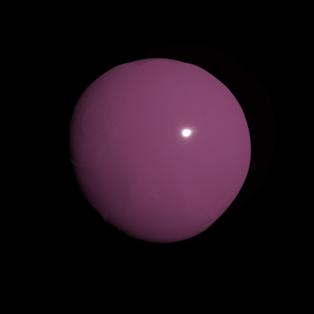

My Symbol

My symbol is 3D modelling. I chose this symbol because I like to make 3D models, and also because it accurately represents my growth this year. My symbol relates to writing because 3D modelling is a lot like my progress in it this year; I started with a blank slate and shaped and manipulated it to my liking until I got to the form I desired. It took some hard work, and some help from others, but eventually I was able to get there. The symbol relates to reading because when you make a 3D model, you might not know how to approach something, but end up getting it done anyways, like how I was with my reading goals. Sometimes, I thought I wasn’t going to be able to complete my reading goal, but got it done anyways.